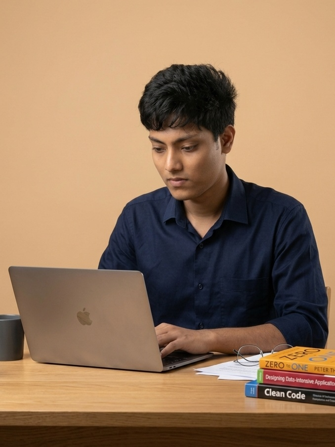
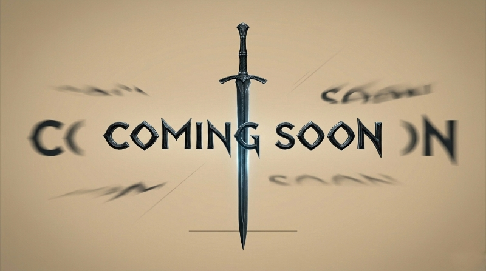
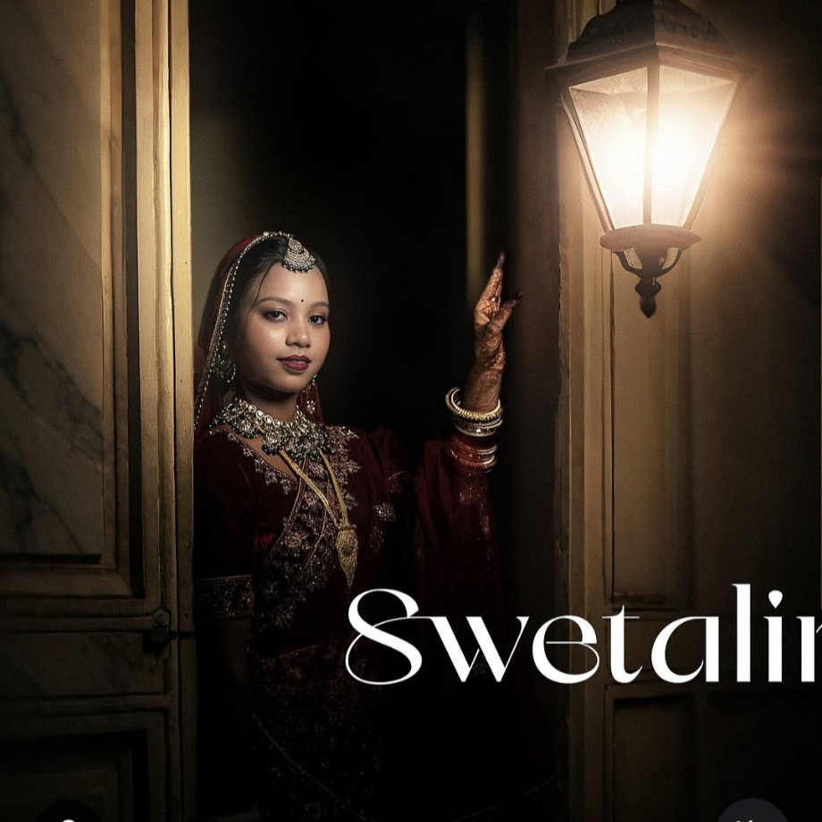
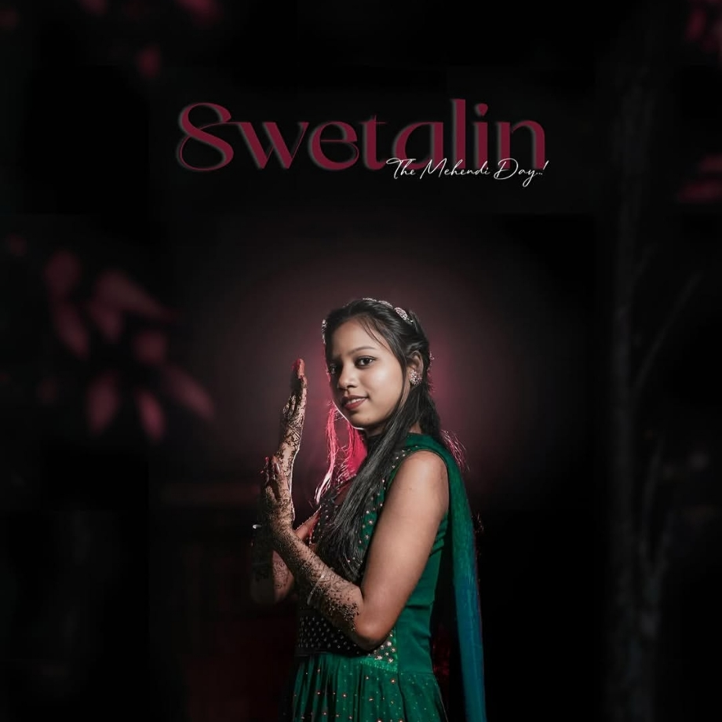
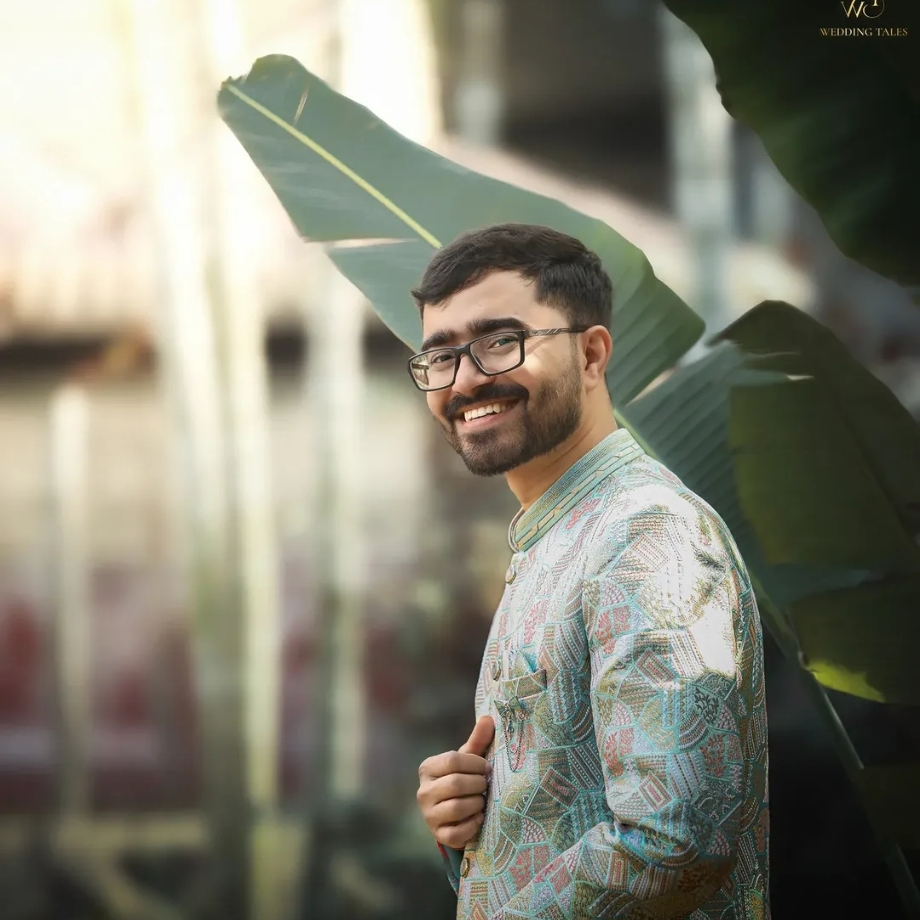
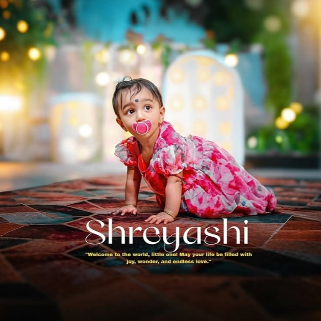
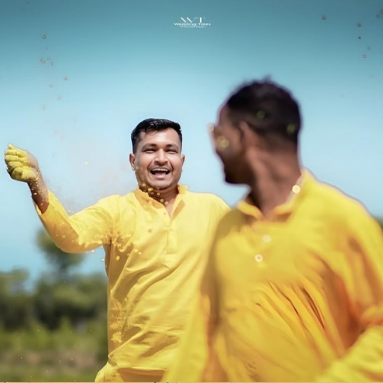
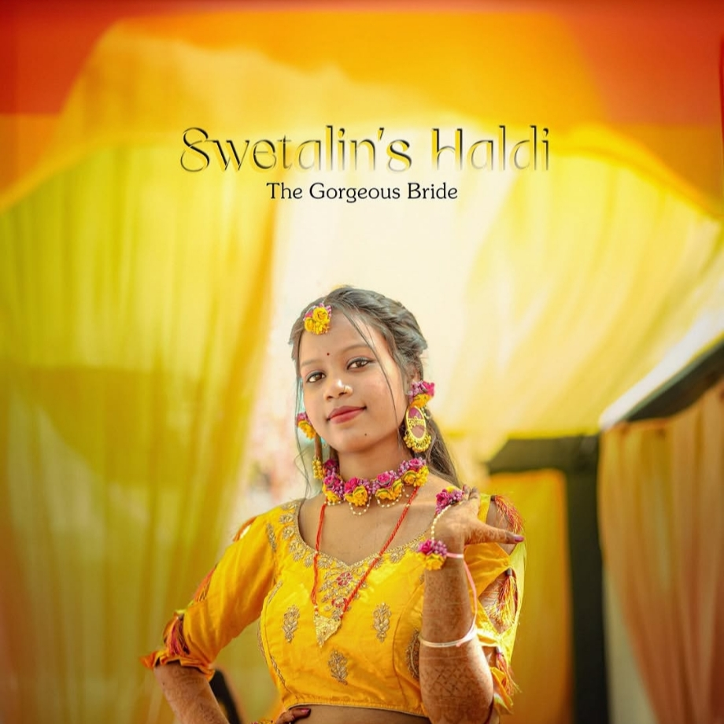

Every frame is a sentence. Every cut, a paragraph break. The grammar of cinema is the grammar of thought itself.
When a developer thinks like a director, interfaces become experiences. Pixels gain narrative weight.
"The best stories are engineered in silence and detonated in public."
Stories aren't told. They're engineered.
A study in restraint. Silences carry more weight than words. ★★★★½
Rhythm becomes image. An experiment dissolving the line between audio and visual. ★★★★
Frame — A Cutting Tool · Atelier Studio Site · Hours, Kept · Last Print Run
Filed by the Editorial Desk, Since 2022

Tushar, photographed in available light.
Long before he learned the grammar of frames, Tushar Ranjan Nayak (born 19 November 2006) was increasingly convinced that the world, as seen through a child’s eyes, held dimensions unreachable through ordinary language. Born in Old Town, Keonjhar, Odisha, India, to Sunil Ranjan Nayak and Jasmin Nayak, he was raised in a lower middle-class household where reality was practical—but his perception of it was not. His father, formerly an assistant postal GDS servant and now an auto rickshaw driver, and his mother, a homemaker, built a life grounded in resilience. Within that structure, Tushar began to notice something else entirely—in the flicker between shadow and tungsten, something crystallized: reality was not fixed. It could be reframed, re-sequenced, and re-felt. By the time he was old enough to hold a camera, he had already arrived at the idea of the self as narrative architect. The frame, not the eye, was the primary instrument. Every edit declared intention: this matters—this, and not that. Educated at SSVM Keonjhar (10th) and later at Dharanidhar Autonomous College, Keonjhar (+2), he is currently pursuing a Diploma in Computer Science Engineering at Government Polytechnic, Dhenkanal. But his real education began in 2022, when he stepped into filmmaking—not with resources, but with borrowed tools. A camera from a friend. A laptop passed around. Limitations became language. Those who encounter his work describe a peculiar sensation—the images seem to know something the audience does not, yet. There is structural intelligence beneath the warmth of the lens, a deliberate architecture hidden within what appears spontaneous. He learned code the same way he learned cinema: by breaking things with intention. The web became his second canvas. Interfaces turned into short films. User experience became emotional pacing. A Hindu by religion and belonging to the Jyotish caste, Tushar operates today at the intersection of filmmaker, editor, and web developer—not because the roles conveniently overlap, but because, in his theory, they were never separate. All three disciplines serve the same purpose: directing attention, engineering belief, and ultimately, rewriting what we call reality.
By the time he was old enough to hold a camera, Tu shar had already arrived at the idea of the self as narrative architect. The frame, not the eye, was the primary instrument. Every edit said: this matters. This, and not that.
Those who have encountered his work describe a peculiar sensation — that the images seem to know something the audience does not, yet. There is structural intelligence behind the warmth of the lens, deliberate architecture beneath what appears to be spontaneous capture.
He learned code the way he learned cinema: not through manuals, but through breaking things with intention. The web became a second canvas. Interfaces became short films. User experience became emotional pacing.
Today he operates at the intersection of filmmaker, editor, and web developer — not because the roles converge conveniently, but because in his theory, they were never separate. All three are in the business of directing attention, engineering belief, and rewriting what we call real.
A curated dossier of select projects

A silent conversation between two strangers who share a train and a secret. Mood study in available light and compression.
Read dispatch →Rhythm visualized. An experiment where every edit lands on a frequency. The city breathes in sync with the beat.
Read dispatch →A digital atelier for an independent creative studio. Minimal interface, maximal atmosphere. Typography as architecture.
Read dispatch →A meditation on routine and revelation. Ninety seconds that compress a year of daily rituals into a single feeling.
Read dispatch →A love letter to analogue media. Shot on expired film stock. The grain is not noise — it is memory made visible.
Read dispatch →Browser-based tool for visual editors. Designed on the premise that the interface should disappear so the work can emerge.
Read dispatch →Compiled from the account's annals · Structured for future API use
A selection of frames from the ongoing archive






Select works from the archive, now in exhibition
A small film of considerable nerve. The director achieves something unusual: the silence is not absence but substance. Every frame withholds just enough to make you lean forward. Heartily recommended for those who trust a filmmaker to know when not to speak.
An inventory of rhythms that concerns itself with the marriage of image and frequency. A display that consistently merges engagement with rigour. The practice of building something that contains more than it shows — a study only the most convinced will attempt.
Collaborations, commissions, and joint adventures — openly welcome.